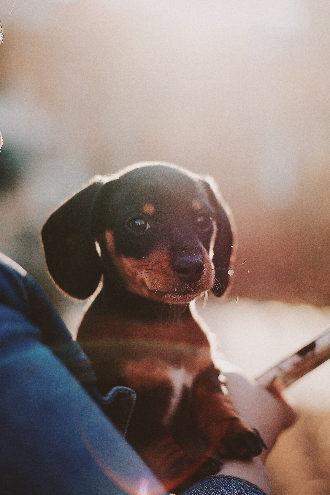
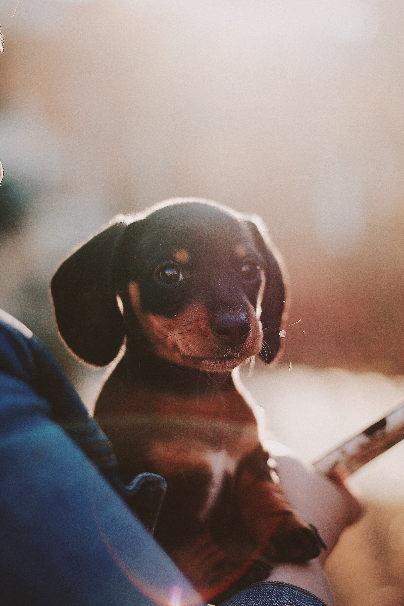

Go to many puppy photos
Characteristic
강아지는 개의 새끼를 말한다.갓 태어난 강아지의 체중은 견종에 따라 크게 차이가 나며 성체로 발달하는 과정에 있으므로 자라면서 털색이나 체형 등이 달라질 수 있으며 정서적인 변화를 겪기도 한다.
친근함, 뛰어난 사교성, 총명한, 활동적인 성격
연령 2~3개월 미만 기준 25 ~ 50 만원 (혈통 종류에 따라 더 비쌀수 있다)

 
